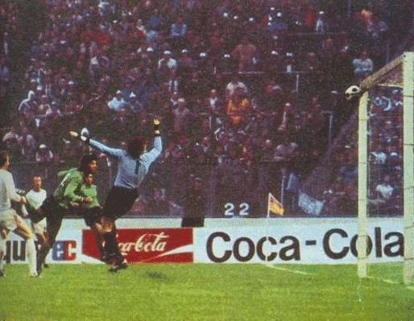
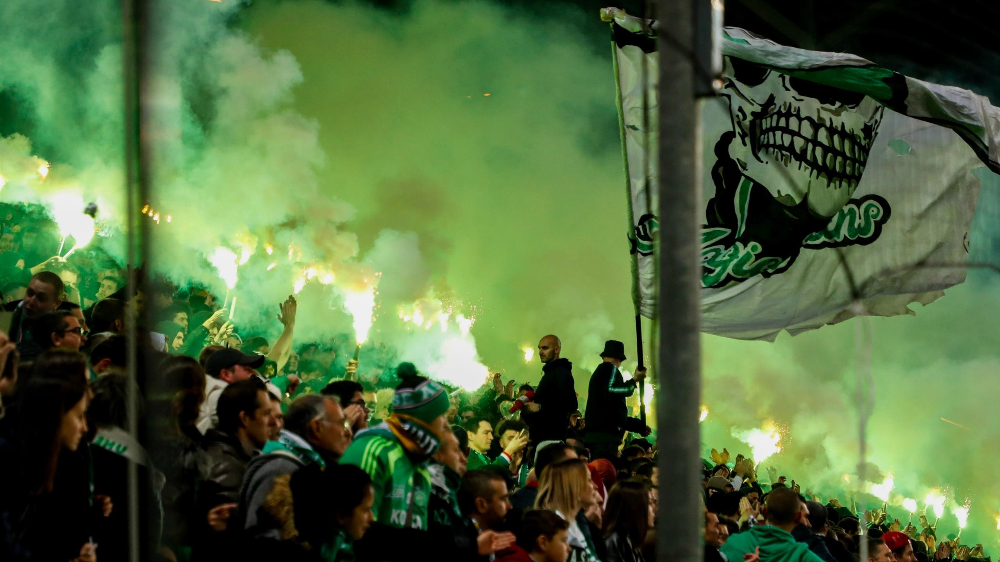
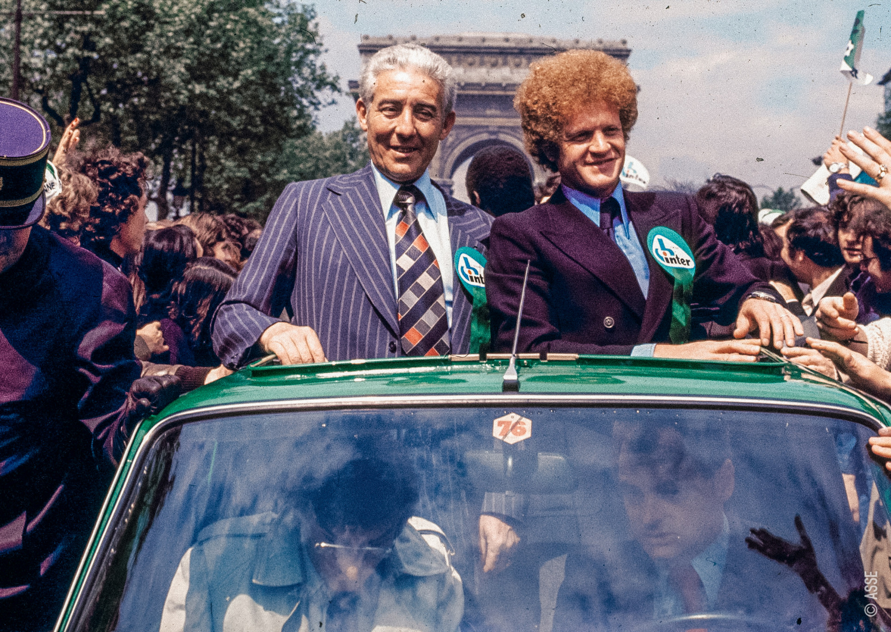
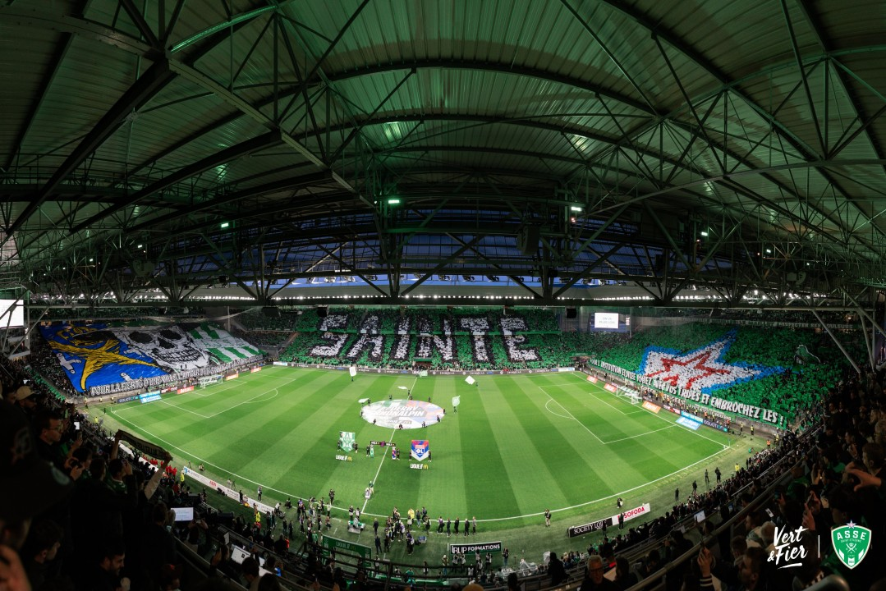

L’AS Saint-Étienne a été fondée en 1919. Son développement doit beaucoup à Geoffroy Guichard, fondateur de la chaîne Casino. Il a investi dans le club et permis la construction du stade historique, le Stade Geoffroy-Guichard, contribuant ainsi à asseoir la popularité du club dans la région.
Pendant de nombreuses années, l’ASSE - Site officiel a été célèbre pour ses poteaux carrés, un détail technique qui a marqué l’histoire du club et de ses matchs à domicile. Ce petit détail fait partie des anecdotes et souvenirs des supporters de toutes générations. <== Cliquez ici

L’ASSE - Site officiel est réputée pour la ferveur de ses supporters. Parmi eux, les groupes emblématiques Green Angels et Magic Fans animent le stade avec chants, tifos et animations spectaculaires. Leur passion contribue à l’ambiance légendaire du « Chaudron ».

L’un des moments les plus mémorables de l’histoire de l’ASSE - Site officiel reste le jour où les joueurs, champions de France, sont descendus sur les Champs-Élysées à Paris dans la célèbre Mercedes 300 D verte pour célébrer le titre avec leurs supporters. Une image symbolique de la ferveur stéphanoise et de la passion du club.

Les derbys contre Olympique Lyonnais sont parmi les matchs les plus attendus de la saison. L’affrontement, surnommé “le Derby Rhône-Alpes”, oppose deux clubs historiques et passionnés. Ces rencontres sont marquées par une intensité exceptionnelle sur le terrain et une ambiance électrique dans les tribunes. Cliquez sur l'image pour voir Le film d’un 126e Derby victorieux ! ==>
